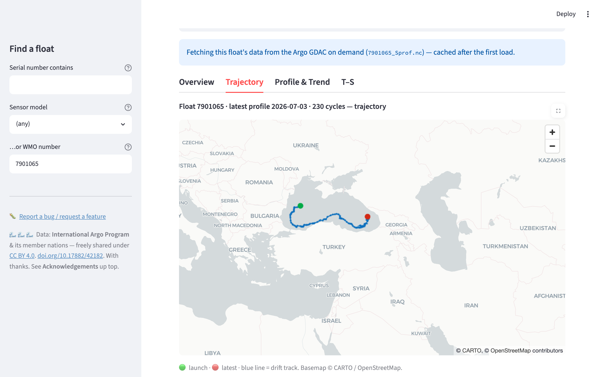

Find a float by its CTD serial number, or by sensor model, WMO, or region, and explore the entire Argo array: BGC, core, and Deep Argo (SBE61 6000 m).

A float's drift track on an interactive basemap, one of several tabbed views (Overview, Trajectory, Profile & Trend, T-S).
A fast, free tool for oceanographers and the curious. Find an Argo float by its sensor serial number: enter a CTD serial (SBE41, SBE41CP, SBE61) and see which float it belongs to, every other sensor on board, where it is, and what it has measured, across the whole global Argo program.
Find any of 20,321 floats by CTD/sensor serial number, sensor model (e.g. SBE41, SBE61), WMO number, or ocean region. A serial search highlights exactly which sensor and serial it matched; click a match to open it.
Biogeochemical (Sprof), physical core (prof), and full-depth Deep Argo floats, including 6000 m SBE61 Deep SOLO, Deep APEX, and Xuanwu profilers.
An interactive trajectory basemap, vertical profiles (raw or adjusted, QC-aware), depth-time sections, temperature-salinity diagrams, and per-pressure time series with trend tests.
Potential density σ₀, conservative temperature, mixed-layer depth, and
apparent oxygen utilization, computed on the fly with gsw.
Float profiles are fetched on demand straight from the Argo GDAC when you open a float, with no stale local mirror.
MIT-licensed code, built on freely available Argo data. No login, no cost, for everyone.
The app stores only a compact metadata index for all ~20,000 floats (a few megabytes), so search is instant. When you open a float, its full profile dataset is streamed live from the Argo Global Data Assembly Centre and cached, giving the best of both worlds: complete coverage without hosting hundreds of gigabytes.
https://doi.org/10.17882/42182.
Derived quantities shown here are not official Argo products.
Query the whole array by sensor serial number, model, WMO, region, or type, straight over HTTP with DuckDB or pandas. No key, no rate limit. The serial/sensor lookup is something the GDAC, ERDDAP, and Argovis don't offer.
-- Every 6000 m Deep float (SBE61 CTD), in one query:
SELECT DISTINCT wmo FROM
'https://vladsimontov.github.io/ArgoFloatData/api/sensors.parquet'
WHERE sensor_model = 'SBE61';